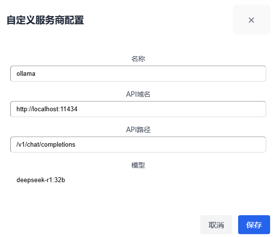

1. 安装与启动
1.1 安装要求
- Windows 10/11 64位操作系统
1.2 安装步骤
- 从官方发布页下载最新版安装包
- 运行下载的安装程序
- 按照安装向导完成安装
1.3 启动应用
- 从桌面快捷方式或开始菜单启动NovelBox
2. 首次使用配置
2.1 选择工作区
- 首次启动NovelBox时，系统会提示您选择一个工作区文件夹
- 工作区是存储所有小说项目和配置文件的位置
- 点击"选择文件夹"按钮，浏览并选择一个空文件夹或创建新文件夹
- 确认选择后，系统将初始化工作区
提示： 建议选择一个专用的空文件夹作为工作区，并定期备份该文件夹内容。
2.2 配置AI服务
- 打开应用后，点击主界面上方的"⚙️ AI配置"按钮
- 选择AI服务商：支持OpenAI、Anthropic、Google Gemini、DeepSeek、MiniMax
- 选择AI模型
- 输入API密钥
- 配置代理服务器（如需）
- 点击"更多设置"调整模型参数：
- Temperature：控制生成内容的创造性（值越大想象力越丰富）
- Top P：控制输出多样性（值越小输出越保守）
- 最大Token数：控制生成文本的最大长度
- 点击"保存"完成配置
提示： 不同的AI服务商需要不同的API密钥。请确保在各自官网注册并获取有效的API密钥。
2.3 自定义服务商（可选）
- 在AI配置界面点击"自定义服务商"按钮
- 填写服务商名称、API域名、API路径和模型名称
- 点击"保存"添加自定义服务商
提示： 您可以添加本地运行的AI模型，如Ollama等，只需配置正确的API域名和路径。
本地Ollama配置示例
以下是配置本地Ollama服务的示例：
在此示例中：
- 名称：ollama（您可以使用任何名称标识此服务商）
- API域名：http://localhost:11434（本地Ollama服务的默认地址）
- API路径：/v1/chat/completions（Ollama的API路径）
- 模型：deepseek-r1.32b（您安装的Ollama模型名称）
2.4 提示词配置（可选）
- 在AI配置界面点击"提示词配置"按钮
- 可自定义多种场景下的提示词：
- 生成书名简介提示词
- 生成设定提示词
- 生成剧情大纲提示词
- 生成章节细纲提示词
- 生成小说章节提示词
- 生成小说首章提示词
- 续写提示词
- 扩写提示词
- 缩写提示词
- 改写提示词
- 更新设定提示词
- 点击"保存"完成配置
3. 书库管理
3.1 创建新书
- 在主界面点击右上角的"+ 创建新书"按钮
- 填写书名
- 填写简介（可手动输入或点击"🤖 AI生成"）
- 点击"保存"创建新书
使用AI生成书名和简介
- 在创建新书或编辑书籍对话框中，点击"🤖 AI生成"按钮
- 在弹出的AI生成对话框中，输入有关小说的内容（如起点风、番茄风、传统文学、主角设定、主要金手指等）
- 点击"生成"按钮，AI将根据您的输入生成合适的书名和简介
- 生成完成后，您可以查看和修改AI生成的内容
- 点击"应用"按钮将自动填充书名和简介到创建界面中
- 如果生成结果不满意，可以修改输入内容后重新生成
提示： 为了获得更好的生成结果，请尽可能详细地描述您的小说构思。AI会根据您提供的信息，生成符合特定小说类型风格的书名和简介。
3.2 管理已有书籍
- 打开：点击书籍卡片上的"打开"按钮进入编辑界面
- 编辑：点击"编辑"按钮修改书名和简介
- 删除：点击"删除"按钮并确认删除书籍
注意： 删除书籍操作不可恢复。请确保在删除前备份重要内容。
4. 章节管理
4.1 创建卷与章节
- 在编辑界面左侧章节树中点击"+"按钮添加新卷
- 在卷节点上点击"+"按钮添加新章节
- 双击节点或点击编辑按钮可修改卷/章节名称
4.2 编辑章节内容
- 在章节树中选择要编辑的章节
- 在右侧编辑器中输入或编辑内容
- 编辑内容会自动保存
4.3 删除卷/章节
- 点击节点旁的删除按钮（🗑️）删除卷或章节
5. AI辅助创作
5.1 小说设定与大纲生成
5.1.1 生成小说设定
- 点击界面右上角的"📝 大纲"按钮
- 在大纲面板中选择"设定"标签页
- 输入设定要求（如世界观、人物设定、能力体系等）
- 点击"AI功能"-"AI润色"按钮
- 生成完成后，可以查看和编辑生成的设定内容
- 点击"保存设定"按钮应用更改
提示： 设定是小说的基础框架，包括人物设定、世界观设定和特殊设定（如修炼体系、能力体系等）。详细的设定有助于保持故事的一致性。
5.1.2 生成剧情大纲
- 在大纲面板中选择"大纲"标签页
- 输入大纲要求（如故事走向、主要冲突、结局等）
- 点击"AI生成"按钮
- 生成完成后，可以查看和编辑生成的大纲内容
- 点击"保存大纲"按钮应用更改
提示： 剧情大纲通常会按卷划分，每卷包含主题、核心矛盾、重要事件、场景和转折点等内容。良好的大纲有助于保持故事的连贯性和节奏感。
5.2 章节细纲生成
- 选择一个章节
- 点击"章节细纲"按钮
- 在弹出面板中点击"AI生成细纲"生成章节细节大纲
- 查看并编辑生成的细纲内容
- 点击"保存"按钮应用更改
重要提示： 章节细纲中的章节号（如"第1章"）是程序区分前文和当前章节的重要依据。在编辑细纲时，请确保保留或正确设置章节号，这样系统才能正确识别章节顺序，并在生成内容时准确引用前文内容。
注意： 如果章节细纲中没有明确的章节号标识，可能会导致AI在生成章节内容时无法正确引用前文，影响内容的连贯性和一致性。
5.3 AI生成章节内容
- 选择一个已有章节细纲的章节
- 在编辑器界面点击工具栏中的"AI生成"按钮
- 系统会自动分析前文内容、章节细纲和设定
- AI将生成完整的章节内容，保持与前文的连贯性
- 生成过程中可点击"停止生成"中断
- 生成完成后可以查看和编辑内容
关联前文特性： AI生成章节功能会自动分析之前章节的内容，确保新生成的章节与前文情节、人物和设定保持一致。这使得整个小说内容更加连贯，避免出现前后矛盾的情况。
首章生成： 对于小说的第一章，系统会使用特殊的首章生成模式，着重于引入主角、建立故事世界和设定基调，以吸引读者继续阅读。
5.4 AI续写
- 在编辑器中编写部分内容
- 将光标放在需要续写的位置
- 在底部输入框中输入续写指导（如情节方向）
- 点击"AI续写"按钮生成后续内容
- 生成过程中可点击"停止生成"中断
5.5 文本扩写/缩写
- 在编辑器中选中要处理的文本
- 在弹出的浮动工具栏中选择"扩写"或"缩写"
- AI会根据选项自动处理选中文本
5.6 文本改写
- 选中要改写的文本
- 在浮动工具栏中点击"改写"
- 输入改写要求（可选）
- AI会根据要求改写选中文本
提示： 为了获得更好的AI生成效果，请尽可能提供明确的指导信息，如情节方向、人物情感、场景描述等。
6. 片段功能
6.1 创建片段
- 点击左侧边栏顶部的切换按钮，切换到"片段"面板
- 点击"+"按钮创建新片段
- 在片段编辑窗口中输入内容
6.2 从AI生成结果创建片段
- 当AI生成内容后，可以将生成结果保存为片段以便后续使用
6.3 管理片段
- 点击片段可查看内容
- 删除：点击片段旁的删除按钮
- 应用片段：可将片段内容插入到当前编辑的章节中
7. 智能校对
- 完成章节编写后，点击编辑器工具栏中的校对按钮✓打开校对面板
- 系统会调用AI自动检查文本中的错别字、语法错误、标点使用不当和敏感词
- 校对结果会在面板中以高亮方式显示，并提供修改建议
- 您可以选择接受或忽略每个修改建议
- 点击"应用所有修改"按钮一次性应用所有接受的修改
提示： 智能校对功能特别适合在完成章节后使用，可以帮助发现人眼容易忽略的错误，并检查可能的敏感内容，避免发布后遇到问题。
8. 导出功能
8.1 导出为Word文档
- 在章节树界面点击左上角的导出按钮（文档图标，如下图红圈所示）
- 在弹出的文件保存对话框中选择保存位置
- 系统会将小说内容按章节顺序导出为DOCX格式文件
- 导出完成后可以使用Microsoft Word或其他支持docx格式的软件打开查看
9. 实用工具
9.1 搜索和替换
- 使用快捷键或点击搜索按钮打开搜索面板
- 输入搜索词
- 可选择替换为新文本
- 点击"替换"或"全部替换"应用更改
9.2 字数统计
- 编辑器底部会实时显示当前章节的字数统计
10. 高级技巧
10.1 优化AI生成效果
- 调整Temperature和Top P参数影响生成内容的创造性和多样性
- 提供明确的续写指导可获得更符合预期的内容
- 使用片段功能保存多个AI生成版本，选择最佳结果
10.2 组织章节结构
- 使用卷功能组织大型作品
- 为章节添加编号和标题，便于管理
- 使用大纲功能规划整体故事结构
11. 故障排除
11.1 AI连接问题
- 检查API密钥是否正确
- 确认网络连接稳定
- 如需使用代理，正确配置代理设置
11.2 自动保存问题
- 应用会自动保存内容，如遇问题可手动保存
- 定期备份重要作品